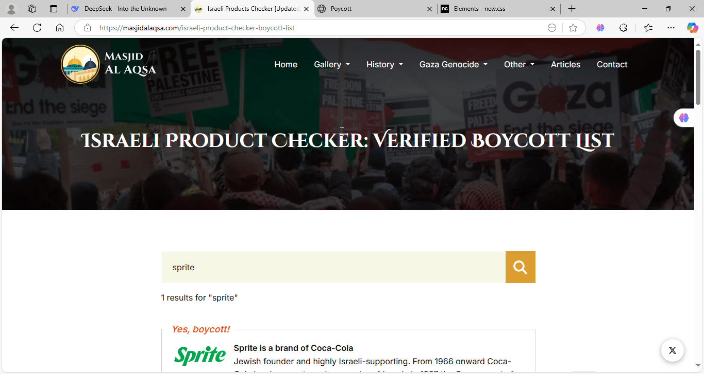

الهدف هو التعريف ببعض البضائع المنتشرة في سوريا و التي تدعم الاحتلال
يمكنكم البحث بسهولة ضمن الموقع التالي
لن يتم ذكر أسماء بضائع بديلة تجنباً للدعاية, سوريا بلد غني غذائياً فيه الكثير من الخيرات وفيها العديد العديد من البدائل المميزة
لسنا بصدد التشريع هنا ولسنا بصدد إصدار الفتاوى بالتحليل أو التحريم, بشكل عام قاطع مادام الأمر ممكناً
مثال 1: يمكننا التخلي عن بعض أنواع الشوكولا والمياه المعبأة للشركات التي تدعم الاحتلال والسوق مليء بالبضائع المحلية التي تغطي هذا الأمر و تزيد أيضاً
مثال 2: حليب الأطفال, ربما يكون تغيير حليب الأطفال أمر صعب بالنسبة للأطفال الرضع و قد يؤدي للمرض وهذه ضرورة (ضرورة حقيقية) ربما تصعب المقاطعة معها
فَاتَّقُوا اللَّهَ مَا اسْتَطَعْتُمْ
بالنسبة للمطورين الذين يريدون المساهمة في المشروع هناك عدة أمور يجب أخذها بعين الاعتبار:
موقع يقين